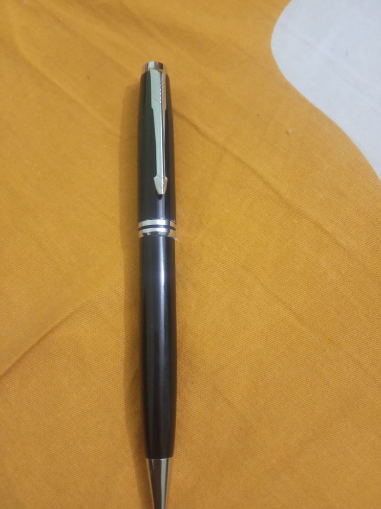
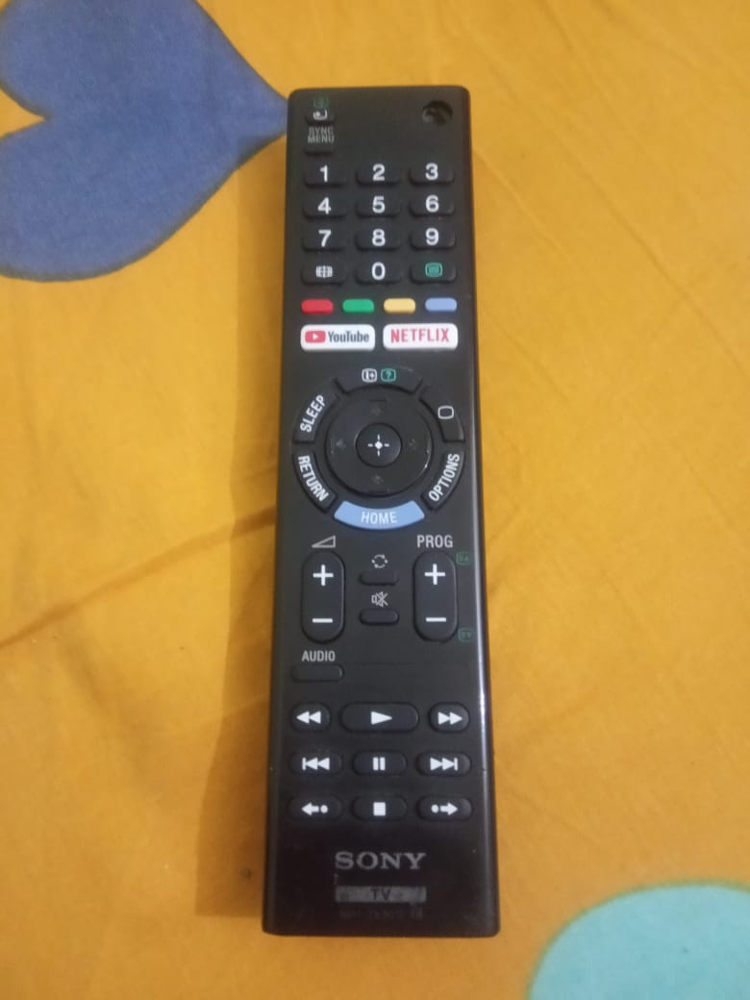
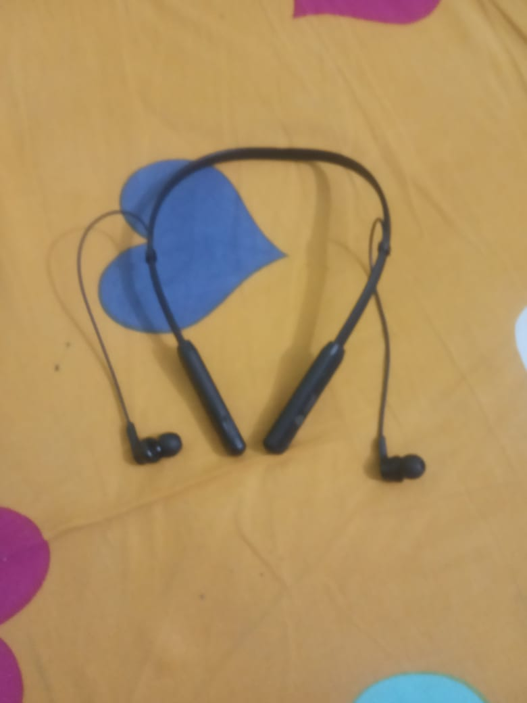

CASE STUDY BETWEEN GOOGLE LENS AND MOBILENET
GOOGLE LENSVS
MOBILENET
-
Test Image -

- Test Image - 
- Test Image - 
- Test Image -
- Test Image - 
Output on Google lens - Hard case pencil box
Output on Mobilenet Model - pick,plectrom
Result - Google Lens is more accurate.
Output on Google lens - Parker pen
Output on Mobilenet Model - BallPoint Pen
Result - Both are equally accurate.
Output on Google lens - remote
Output on Mobilenet Model - Remote control , remote
Result -Both are equally accurate.
Output on Google lens - notebook
Output on Mobilenet Model - curtain,envelope
Result - Google Lens is more accurate.
Output on Google lens - earband earphones
Output on Mobilenet Model - lasso,string
Result - Google Lens is more accurate.
Developed by - Kumar Sahitya